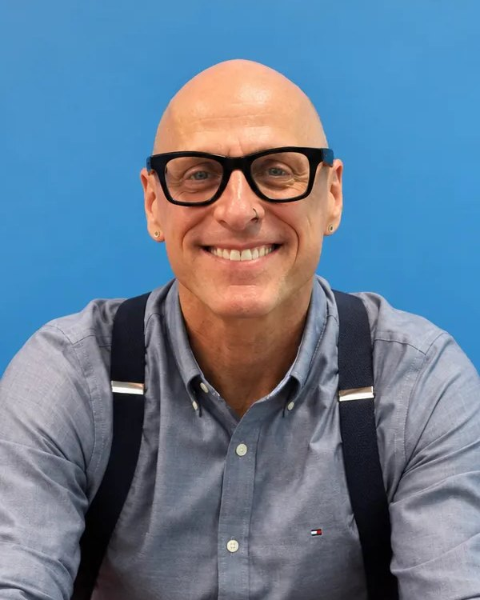

Fourteen years, three moments.
This all started with a measurement problem inside a peer support organization, and someone who refused to accept that the only thing worth counting was whether a person had stayed abstinent or completed a "program".
The measure
David Whitesock builds the Recovery Capital Index® inside a peer support organization, because the people it served were getting better and no available tools show the outcome they were achieving.
The market
Commonly Well, PBC is founded and takes the RCI to the field. It is now used by more than 1,000 facilities across the United States, with over 100,000 participants engaged since.
The system
Modus. Fourteen years of Recovery Intelligence are turned into a system that acts on the results while the relationship is still open.
Expand access to recovery care that delivers results.
Grit deserves a system that meets the effort.
Overcoming addiction and mental health conditions takes grit, persistence, and time. Resilient recovery requires more than 30, 60, or 90 days. Modus gives you and the people you serve a fighting chance at recovery that holds.
We elevate the care relationship, collect the data that actually matters, and turn it into evidence your team, board, payers, contracts, donors, and communities can use.
Measuring outcomes takes time. The current care model is too short.
Treatment sets a foundation. Building the muscle for lasting change takes longer than the funded episode allows. Meanwhile you are asked to prove outcomes with tools that stop measuring the day someone walks out or is discharged.
Our system blazes a new trail.
Inside Modus, the timeline is a trail. People set summits and move through milestones toward them. That structure is the record. It is also why they stay engaged long enough to measure.
The first two steps are people, not software. We build the outcomes strategy with you before anything gets configured. That is the step most vendors skip, and it is the one that decides whether your strategy and the rest of it works.
Agree on the outcomes that count.
Build the data strategy that carries them.
Extend the care timeline. Capture it as it happens.
Show what held, in terms payers or funders accept.
See the drop-off early enough to act.
Modus sits alongside your EHR, CRM, and case management tools. It does not replace them. Integrations are in progress.
Three people pushing the status quo.
Three careers that converged on the same problem.

Ready now. More ahead.
Modus is deployed and measuring outcomes today. What we are looking for are organizations who are ready to be bold about what they measure and how they apply insights from their data.
Live
Modus is running and measuring outcomes now. Join a growing recovery data community.
Longevity
Extending measurement well past the standard episodes of care, so the data covers the time where recovery is actually happening.
Application
Turning results into decisions while the client relationship is still open, not into a report filed after it closes.